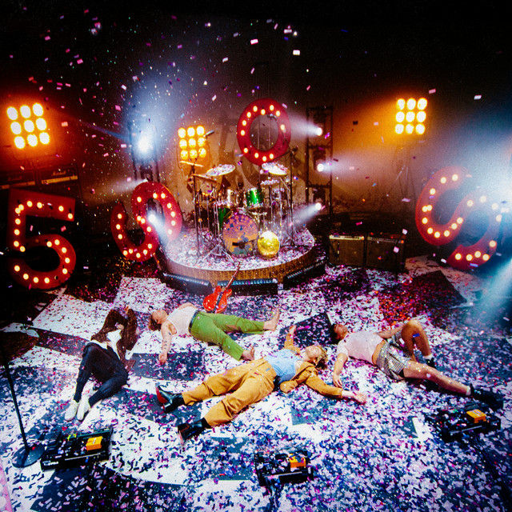

   
 <div class="side-menu">
    <!-- <div> -->
        <div class="img-icon spotify-icon"><i class="fab fa-spotify"></i></div>
        <h4 class="spotify-title"> Spotify</h4>

        <div class="sub-menu">
            <ul class="spotify-menu">
                <li class="menu-list">
                    <div class="square-box" [routerLink]="['/dashboard']" routerLinkActive="active">
                        <i class="fas fa-home menu-icon"></i> 
                    </div>
                    <a [routerLink]="['/dashboard']" class="liked-songs" routerLinkActive="active"> Home</a>
                </li>
                <li class="menu-list">
                    <div class="square-box" [routerLink]="['/search']"  routerLinkActive="active">
                        <i class="fas fa-search menu-icon"></i>
                    </div> 
                    <a  [routerLink]="['/search']"  class="liked-songs" routerLinkActive="active">Search</a>
                </li>
                <li class="menu-list">
                    <div class="square-box" [routerLink]="['/library']" routerLinkActive="active">
                        <i class="fas fa-book-open menu-icon"></i>
                    </div>
                    <a [routerLink]="['/library']" class="liked-songs" routerLinkActive="active"> Your Library</a>
                </li>
                <li class="menu-list" style="margin-top: 3.5em;">
                    <div class="square-box" routerLinkActive="active" [routerLink]="['/playlist']">
                        <i class="fa-solid fa-square-plus menu-icon-2"></i>
                    </div>
                    <a class="liked-songs" [routerLink]="['/playlist']" routerLinkActive="active">Create Playlist</a>
                </li>
                <li class="menu-list">
                    <div class="box" routerLinkActive="active">
                        <i class="fa-solid fa-heart" style="font-size: 13px;"></i>
                    </div>
                    <a class="liked-songs" routerLinkActive="active">Liked Songs</a>
                </li>

            </ul>

            <div class="line"></div>

            <div class="playlist">
                <ul class="spotify-menu">
                    <li class="playlist-list">My Playlist #25</li>
                    <li class="playlist-list">My Playlist #24</li>
                    <li class="playlist-list">Your Top Song 2022</li>
                    <li class="playlist-list">On Repeat</li>
                    <li class="playlist-list">Best Of The Decade For You</li>
                    <li class="playlist-list">Upside Down Playlist</li>
                    <li class="playlist-list">Top hits 2010s-2022</li>
                    <li class="playlist-list">This Is TAYLOR SWIFT</li>
                    <li class="playlist-list">Your Time Capsule</li>
                </ul>
            </div>

            
        </div>
    <!-- </div> -->
</div>


<div class="container-fluid dsb">
    <div class="row">
        <div class="col-md-8">
            <div class="sticky-top top-menu">

                <div class="profile">
                    <div class="dropdown drop-profile">
                        <button class="btn btn-secondary dropdown-toggle profile-btn" type="button" data-bs-toggle="dropdown" aria-expanded="false">
                          Dinie
                        </button>
                        <ul class="dropdown-menu dropdown-menu-dark" style="background-color: #282828; width: 13em; font-family: circular-light;">
                          <li><a class="dropdown-item active" href="#">Account <span class="ext-links"><i class="fas fa-external-link-alt"></i></span></a></li>
                          <li><a class="dropdown-item" href="#">Profile</a></li>
                          <li><a class="dropdown-item" href="#">Upgrade To Premium <span class="ext-links"><i class="fas fa-external-link-alt"></i></span></a></li>
                          <li><a class="dropdown-item" href="#">Support <span class="ext-links"><i class="fas fa-external-link-alt"></i></span></a></li>
                          <li><a class="dropdown-item" href="#">Download <span class="ext-links"><i class="fas fa-external-link-alt"></i></span></a></li>
                          <li><a class="dropdown-item" href="#">Setting</a></li>
                          <li><hr class="dropdown-divider" style="background-color: #3e3e3e;"></li>
                          <li><a class="dropdown-item" href="#">Logout</a></li>
                        </ul>
                      </div>
                </div>
              </div>
            <router-outlet></router-outlet>
        </div>
    </div>
</div>

<footer class="text-white fixed-bottom">
    <div class="container">

        <div class="row footer-row">
            <div class="artist-info">
                
                <div class="footer-song">
                    <p  style="margin-bottom: 0 !important;">2011</p>
                    <p><small style="font-family: 'circular-medium'; font-size: 12px;">5 Seconds Of Summer</small></p>
               </div>
               <div class="minimize">
                    <p><i class="far fa-heart icon-footer"></i><i class="far fa-window-maximize"></i></p>
               </div>
            </div>
            <div class="middle-play">
                    <div class="row icon-play">
                        <span><i class="fas fa-random icon-footer side"></i><i class="fas fa-step-backward icon-footer side"></i><i class="fas fa-play-circle icon-footer play"></i><i class="fas fa-step-forward icon-footer side"></i><i class="fas fa-redo side"></i></span>
                    </div>
                    <div class="row pgrs">
                        <div class="minute">
                            <span>0:47</span>
                        </div>
                        
                        <div class="progress-play">
                            <div class="progress">
                                <div class="progress-bar" role="progressbar" style="width: 50%" aria-valuenow="50" aria-valuemin="0" aria-valuemax="100"></div>
                              </div>
                        </div>
                        <!-- <div class="progress-play"></div> -->

                        <div class="minute-last">
                            <span>3:57</span>
                        </div>
                    </div>
            </div>
            <div class="volume">
                <div class="row">
                    <div class="icon-vol">
                        <span>
                            <!-- <i class="fas fa-stream"></i> -->
                            <i class="fas fa-bars icon-footer"></i>
                            <i class="fas fa-laptop-house icon-footer"></i>
                            <i class="fas fa-volume-up"></i>
                        </span>
                   </div>
               
                 <div class="vol-up">
                        <div class="progress">
                            <div class="progress-bar" role="progressbar" style="width: 50%" aria-valuenow="50" aria-valuemin="0" aria-valuemax="100"></div>
                        </div>
                 </div>
            </div>
     </div>

        </div>
    </div>
  </footer>


